Voor dit schoolproject ontwierp ik samen met mijn team een nieuw
websiteconcept voor Jazzzolder, een jazzclub in Mechelen. We onderzochten
hoe we de bestaande inhoud overzichtelijker, toegankelijker en
aantrekkelijker konden presenteren.
Het project begon als een groepsopdracht met research, branding en een
Figma-prototype. Daarna werkte ik mee aan de WordPress-implementatie en
aan de pagina’s en onderdelen die ik binnen het team opnam.
Projectcard
Klant
Jazzzolder
Team
Vier teamleden
Type
Groepsproject voor een echte klant
Mijn rol
UX/UI-design en implementatie in WordPress
Duur
Februari - juni 2025
Status
Ontwerp en WordPress-prototype opgeleverd; de klant koos
uiteindelijk een ander groepje.
Tools
Figma, WordPress
Focusgebieden
Webdesign, branding, contentstructuur, visual design en
WordPress
De opdracht
De bestaande website bevatte veel tekst, gebruikte veel kaders en had
een onduidelijke structuur. Niet alle links in de navigatie werkten en
onderdelen zoals het gastenboek waren moeilijk bereikbaar.
De fotosetie was bovendien beperkt, omdat onderliggende pagina’s zoals
“Portretten” en “De Zolder” wel inhoud bevatten, maar andere onderdelen
minder bruikbaar of moeilijk vindbaar waren.
De uitdaging was daarom niet alleen een nieuw uiterlijk te ontwerpen,
maar vooral de informatie begrijpelijker en beter vindbaar te maken.
We moesten de bestaande inhoud respecteren, waaronder de uitgebreide
geschiedenis en routesbeschrijving, terwijl we de website
overzichtelijker en aangenamer in gebruik wilden maken.
Tijdlijn van het Jazzzolder-project
Informatie van Jazzzolder
en bezoek aan Jazzzolder
Research
Branding
Eerste prototype
Tweede prototype
Implementatie in WordPress
Eindresultaat
Jury
Over Jazzzolder
Jazzzolder is een jazzclub in de Predikherenkerk in Mechelen. Elke
tweede en vierde vrijdag van de maand worden er jazzconcerten
georganiseerd waar mensen uit Mechelen en omgeving naartoe kunnen
komen.
Tijdens deze avonden treden zowel Belgische als internationale
jazzbands op.
Naast concerten verkoopt Jazzzolder ook eigen merchandise, zoals
T-shirts, hoodies, petten en magneten. Deze producten worden
made-to-order geproduceerd, wat betekent dat ze alleen worden gemaakt
wanneer er vraag naar is.
De website moest zowel bestaande bezoekers als nieuwe
geïnteresseerden ondersteunen. Een bezoeker moest kunnen ontdekken
welke concerten gepland zijn, praktische informatie kunnen vinden en
begrijpen wat Jazzzolder precies is.
Tegelijk moest de rijke geschiedenis van de jazzclub behouden blijven,
ook al betekende dit dat sommige pagina’s veel inhoud bevatten.
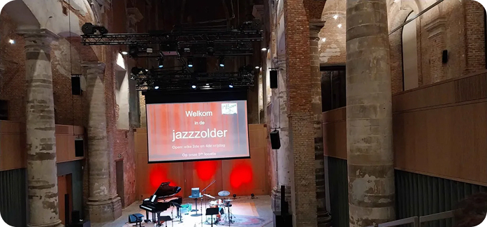
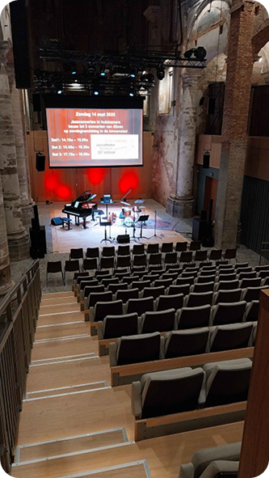
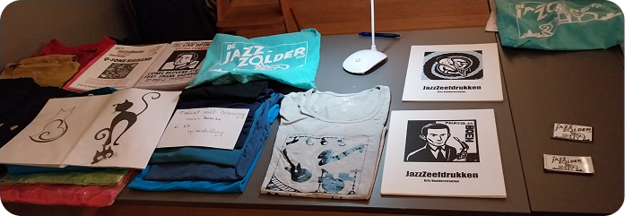
Research en briefing
Ons proces begon met een briefing in de klas door de mensen van
Jazzzolder. Zij legden uit wat de organisatie doet, welke inhoud ze
belangrijk vonden en wat behouden moest blijven van hun bestaande
website.
We ontvingen ook hun PowerPointpresentatie, die diende als basis voor
de inhoudelijke requirements van het project.
Daarnaast bezochten we zelf een avond in Jazzzolder. Door de locatie,
bezoekers en sfeer in het echt mee te maken, kregen we een beter beeld
van de identiteit van de organisatie.
Dit hielp ons om niet alleen een functionele website te ontwerpen,
maar ook een digitale ervaring die aansluit bij de warme, culturele en
sociale sfeer van de jazzclub.
Tijdens de briefing werd duidelijk dat het bestaande logo behouden
moest blijven. Voor de rest kregen we ruimte om zelf kleuren en
typografie te kiezen.
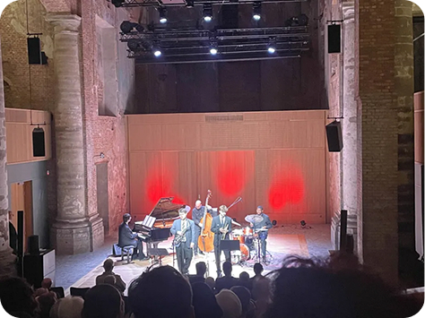
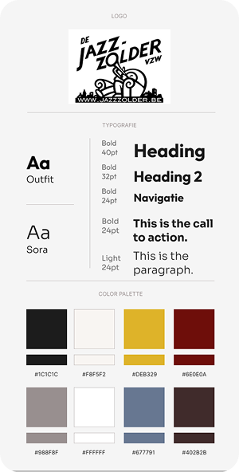
Brandsheet en visuele identiteit
In deze fase van ons project ontwikkelden we een uitgebreide
brandsheet waarin we typografie en kleurgebruik vastlegden. Dit vormde
de basis voor een consistente en herkenbare visuele identiteit.
Voor de kleuren kozen we een palet dat zowel de sfeer van Jazzzolder
weerspiegelt als zorgt voor een dynamische en toegankelijke
gebruikerservaring.
De gekozen typografie speelt een cruciale rol in de uitstraling van
de website. We kozen voor duidelijke lettertypes met voldoende
variatie tussen headings, navigatie-elementen en paragrafen.
Deze zorgvuldig gekozen elementen vormen samen een sterke basis voor
de visuele identiteit van de website.
Figma prototype
Na de branding ontwikkelden we een eerste prototype van de website in
Figma. Dit prototype omvatte meerdere pagina’s, waaronder affiches,
een galerij, merchandise, home, tickets en over ons.
Bij het ontwerpen focusten we op een gebruiksvriendelijke en visueel
aantrekkelijke structuur, waarbij belangrijke verbeteringen werden
doorgevoerd ten opzichte van de huidige website.
Een van de grootste aanpassingen was het toevoegen van meer foto’s in de
Over Ons-pagina, zodat bezoekers een beter beeld krijgen van de
Jazzzolder en haar sfeer.
Daarnaast maakten we de hele website logischer gestructureerd en
voegden we duidelijke call-to-action-knoppen toe die gebruikers naar
relevante secties leiden.
Een nieuw en interessant onderdeel van de website is de
merchandisepagina. Omdat Jazzzolder werkt met een made-to-order-principe,
ontwierpen we hiervoor een overzichtelijke stappenflow.
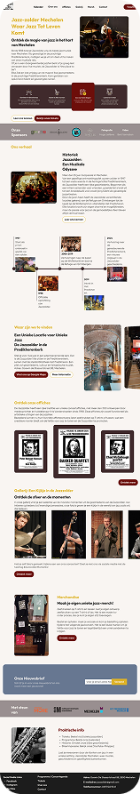
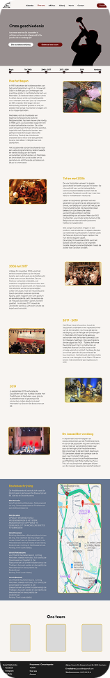
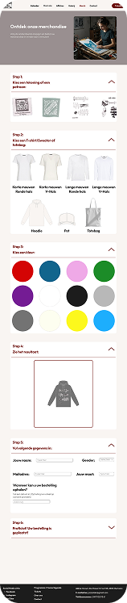
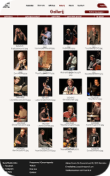
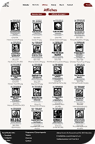
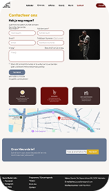
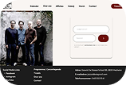
Aanpassingen na de feedback
Na het ontwikkelen van ons eerste prototype in Figma ontvingen we
uitgebreide feedback van zowel onze leerkrachten als Jazzzolder. Op
basis van deze waardevolle input voerden we verschillende verbeteringen
door om de website gebruiksvriendelijker, visueel aantrekkelijker en
functioneler te maken.
Een belangrijke aanpassing was het verwijderen van de logo-pagina,
aangezien dit proces via WordPress verloopt. Daarnaast hebben we de
achtergrond van het logo verwijderd en ervoor gezorgd dat het logo
zichtbaar blijft tijdens het scrollen.
Op visueel vlak zorgden we voor een betere structuur en leesbaarheid
door de tekst in twee kolommen te verdelen, de line-height aan te passen
en de lettergrootte te vergroten.
Om de gebruikerservaring te verbeteren, pasten we de sleepfuncties aan
en voegden we carrousels en pijltjes toe om de navigatie intuïtiever te
maken.
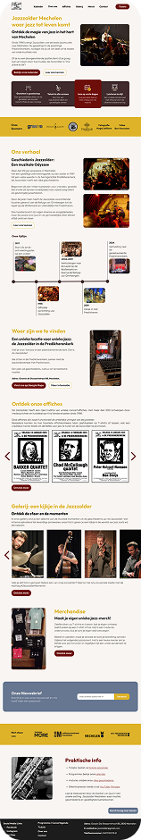
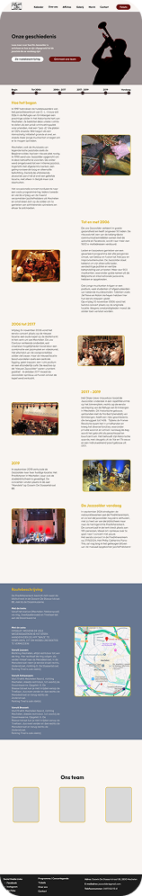
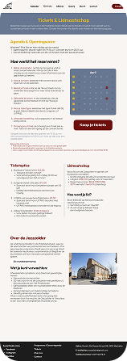
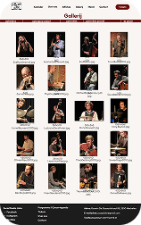
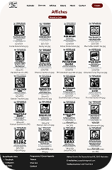
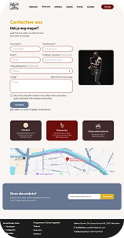
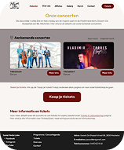
Implementatie in WordPress
Als laatste stap voor ons project startten we met de ontwikkeling van
de website in WordPress, waarbij we Elementor gebruikten als bouwtool.
We maakten onze eigen pagina’s, navigatie en footer.
We probeerden de Figma-designs zo goed mogelijk te vertalen naar
WordPress. Bij de merchandisepagina moesten we de stappen niet in
accordions zetten, dus hebben we ze apart geplaatst.
Ondanks deze wijzigingen zorgden we ervoor dat de website intuïtief en
aantrekkelijk bleef, met een sterke visuele identiteit die aansluit bij
Jazzzolder.
Mijn bijdrage
Binnen het team werkte ik mee aan het analyseren van de bestaande
website, het verwerken van de briefing, het uitwerken van de
brandsheet, het ontwerpen van high-fidelity designs in Figma en de
implementatie in WordPress.
Ik droeg bij aan het structureren van de inhoud en aan het vertalen
van de identiteit van Jazzzolder naar een overzichtelijke digitale
ervaring.
Ik ontwierp de Over Ons-pagina en de merchandisepagina in Figma.
Daarnaast werkte ik mee aan de WordPress-uitwerking van de
merchandisepagina en de Over Ons-pagina.